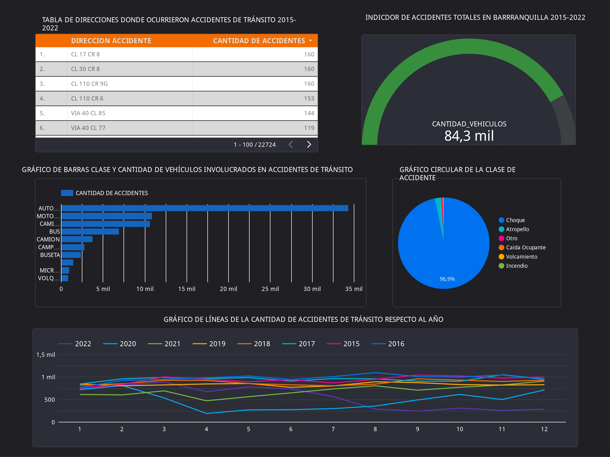
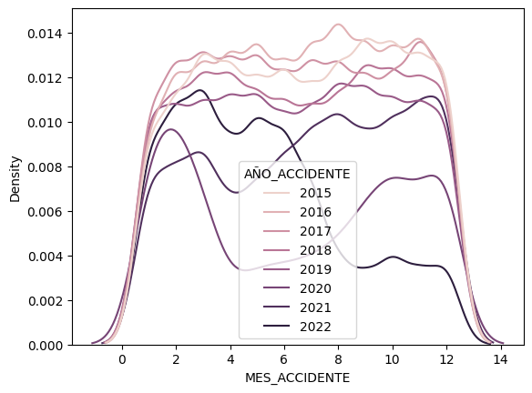

RESULTADOS DE LA INVESTIGACIÓN
Muestra de los gráficos realizados para analizar y sacar conclusiones del comportamiento de los datos.
LINK DEL DASHBOARD:
https://lookerstudio.google.com/reporting/262a90cb-199d-4720-82fb-5729e151a9f7
LINK DEL CUADERNO DE JUPYTER:
https://colab.research.google.com/drive/1z9MKr97hpce47OYQCaUvk8hDpXOM89Eb?usp=sharing
MES DEL ACCIDENTE - CANTIDAD DE ACCIDENTES
En este gráfico podemos evidenciar que en Febrero(2), Marzo(3) y Diciembre(12) son los meses en donde la cantidad de accidentes es mayor en Barranquilla.
Desde el 2015 el índice de accidentes de tránsito ha disminuido hasta la actualidad, ya que, los datos son menos densos a lo largo de los meses de cada año.
.png)
CLASE DE VEHÍCULO ACCIDENTADO - CANTIDAD DE ACCiDENTES
En este gráfico podemos evidenciar que los vehículos particulares son los principales responsables de los accidentes ocurridos en Barranquilla.
.png)
Como mayor actor involucrado se encuentran los automóviles.
.png)
DIRECCIÓN DEL ACCIDENTE - CANTIDAD DE VEHÍCULOS ACCIDENTADOS
Primeramente, con la tabla de valores resgitrados de las calles donde se originaron los accidentes, podemos evidenciar aquellas con mayor frecuencia en accidentes.
DIRECCIONES CON MÁS ACCIDENTES
| Direcciones | Frecuencia |
|---|---|
| CL 17 CR 8 | 160 |
| CL 30 CR 8 | 160 |
| CL 110 CR 9G | 160 |
| CL 110 CR 6 | 153 |
| VIA 40 CL 85 | 144 |
En segundo lugar, podemos evidenciar la probabilidad de cuantos vehículos pueden quedar involucrados en un accidente en cada una de las direcciones. Teniendo esto en cuenta, tanto la Vía 40 con Calle 85 como la Calle 110 con Carrera 6 son las direcciones con mayor cantidad de vehículos involucrados en percances.
.png)